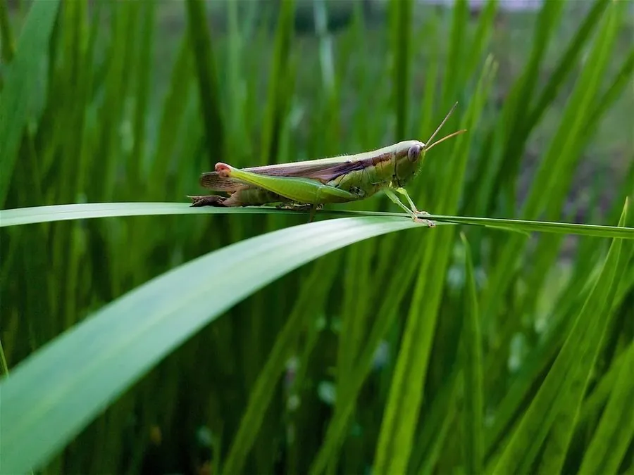

昆虫 · 动物界
日本稻蝗 Oxya japonica

体色黄绿、后足发达的小型蝗虫，成虫和若虫啃食水稻叶片，是中国南方稻区稻田中最为常见的害虫之一。
- 分类
- 门节肢动物门纲昆虫纲目直翅目科蝗科属稻蝗属
- 栖息环境
- 水稻田、田埂和沟边草地
- 地理分布
- 中国南方稻区，以及日本、东南亚
- 保护级别
- 暂无评估
物种志
日本稻蝗成虫体长 25–33 mm，雌虫大于雄虫。体呈黄绿色至黄褐色，前胸背板两侧各有一条褐色纵带；前翅狭长，超过腹部末端；后足股节粗壮，胫节生有刺，善于跳跃。
日本稻蝗分布于中国南方、日本和东南亚，是水稻田及其周边草地最常见的蝗虫之一。它一年发生 1–2 代，以卵在田埂、沟边的土中越冬，翌年 4–5 月孵化。若虫和成虫啃食水稻叶片，形成不规则的缺刻，严重时叶片被吃成只留中脉，影响水稻分蘖和灌浆。它也会取食玉米、甘蔗和禾本科杂草。防治上以铲除田埂杂草、保护青蛙和鸟类等天敌为主，虫口密度高时再辅以药剂防治。成虫寿命约 1–2 个月。
形态与习性
- 食性啃食水稻、玉米、甘蔗和禾本科杂草叶片
- 体长25–33 mm，雌虫大于雄虫
- 世代一年发生 1–2 代
- 越冬以卵在田埂和沟边的土中越冬
- 危害叶片被啃成缺刻，严重时只留中脉
- 天敌青蛙、鸟类和寄生蜂
趣味知识
- 日本稻蝗的前胸背板两侧各有一条褐色纵带，是辨认它的要点。
- 它把卵产在田埂的土里，卵块外裹一层泡沫状的胶质。
- 稻蝗大量发生时，稻田边缘的叶片常被啃得只剩中脉。